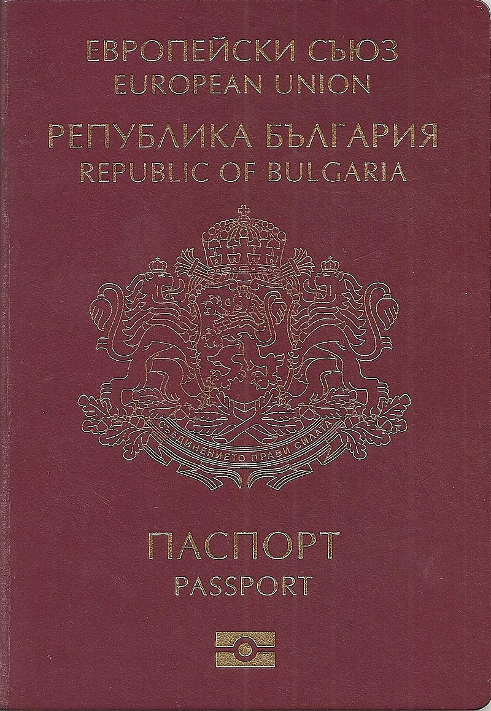

Обикновените български паспорти се издават от Министерството на вътрешните работи. При пътуване само в границите на Европейския съюз не е задължително да се носи български паспорт; за удостоверяване на самоличността е достатъчно само представяне на българска лична карта. В настоящите български паспорти, личните данни и информацията са изписани на български и английски език.
